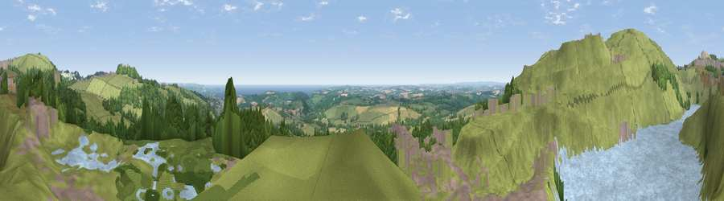

Viewpoint near Trewoon
#1542 in England · top 3% of its area beats it · near TrewoonWhere it is
The exact computed spot (SW 98375 53625). Click the marker for map links.
The view, rendered

A 360° render of this exact spot computed from the terrain model, tree cover and land cover — summer colours, afternoon light, calibrated against photographs of famous viewpoints. Real trees, hedges and buildings will differ in detail.
The panorama
Grey silhouette: terrain skyline in each direction (720 bearings, Earth curvature and refraction included). Dashed green: skyline with trees (+15 m) and buildings (+8 m) as obstacles. Blue strip: how far the ground is visible on each bearing.
Where the view opens
Wedge length = distance to the farthest visible ground on that bearing (vegetation-aware). Rings at 10, 25 and 50 km.
What fills the view
52% grassland · 22% water · 17% woodland · 5% built-up · 4% cropland
Angular shares of the visible panorama (visual magnitude), not map area. Landscape diversity 0.55 (0–1 Shannon).
Key numbers
More beautiful places nearby
The staircase of upgrades: each row has a higher view potential than everything closer. Driving times are estimates from straight-line distance, calibrated against real road routing — check an actual route before setting out.
| Place | Direction | Drive | Score |
|---|---|---|---|
| Viewpoint near Foxhole | W · 1 km | ~3 min | 84.3 |
| Viewpoint near Foxhole | NW · 1 km | ~3 min | 86.4 |
| Viewpoint near Stenalees | NNE · 4 km | ~10 min | 88.0 |
| Viewpoint near Crackington Haven | NNE · 43 km | ~63 min | 88.1 |
| Viewpoint near Combe Martin | NNE · 112 km | ~137 min | 88.9 |
| Holdstone Hill | NNE · 113 km | ~138 min | 90.2 |
| The Knoll | ENE · 158 km | ~181 min | 91.0 |
50.34794, -4.83534 · source: screening · position refined by local search. Computed location — check access rights before visiting.